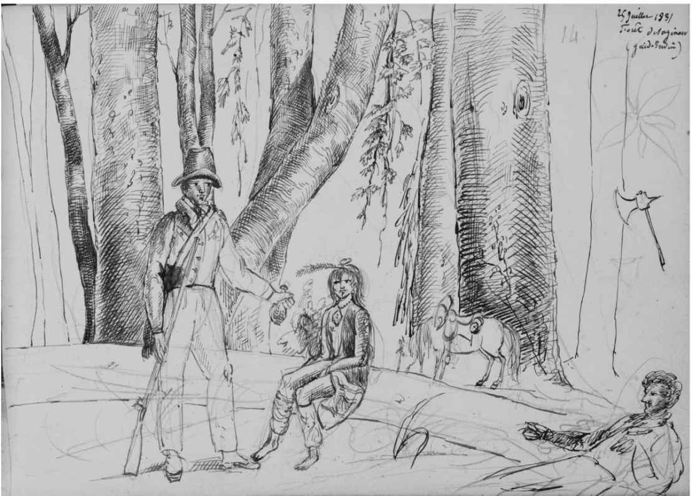

托克维尔赞同使人民主权得以行使的美国的形式民主制度。他赞扬了宪政形式，美国的建国者在构想这些形式时的考量复杂而周密；他赞扬了清教徒带到美国的简单、自发的乡镇自治形式，也赞扬了所有这些形式的基础：结社的艺术。这些形式让人民得以有效地自治，并因此而明智地生活、实现经济繁荣。这些形式创造了政治自由，因为它们本身就是政治自由，那是真正在践行的自由而不仅仅存在于理论中。美国人民在自治中感到自豪，这种自豪感并非盲目乐观，因为他们在自由的同时，还建立了成功的民主制度。
然而托克维尔看到，有一种比形式民主更加强大的非形式的民主。社团的形式在等级和程序两方面对人民协同合作的组织结构做出了规定，但这些渠道或授权机制同时也是耽搁或阻碍人民的意志立即得以执行的壁垒。它们会导致因受挫而焦躁不安的自大，而不是有所成就的自豪。托克维尔在《论美国的民主》上卷第二部分宣称，他的叙述重点将会从（第一部分第四章所展现的）人民主权的原则或教条转向其实际的治理。第二部分第一章的题目就是“为什么可以严格地说美国是由人民统治的”。他宣称，“人民的意见、偏好、利益乃至热情”在实现的过程中不会遭遇“顽强的障碍”。人民通过代议制政府来治理国家，但他们频繁选举代表，为后者指明方向，并让他们依赖于人民。此外，“人民”指的不是从不作为的正式机构，而是以其名义进行统治的大多数。
非形式的民主恰是旧式的形式自由主义试图以代表制和分权制等观念破坏的东西。霍布斯和洛克构想了一种存在于自然状态的形式民主，但它即使存在过，也只是昙花一现，而且其目的在于让以人民的名义——实际上并非如此——来进行治理的君主合法化。洛克和孟德斯鸠发现人民的代表可能会不忠于人民，便制定了形式上的分权，迫使政府自我制衡。《联邦论》完善了自由政府的这两种基本形式，因此美国宪法的每个部分都有充分的代表性，在一个全新设计的联邦制中，分权制体现了新型的、更好的平衡。这些措施都是精心设计的，旨在通过选举来“提炼和扩充”人民的意志，如果未能实现这一宗旨，它们就会提供“辅助的预防措施”来应对失控的政府或蛮横的人民，让人民具备理性来控制激情。
托克维尔不同意这种观点，他的“新式”自由主义抛弃了旧自由主义的希望，即在自然状态下，一个民主的开端可以避免在最终的政府中出现民主的结局。旨在保证主权人民受到纪律约束的那些自由主义形式很容易遭到蹂躏。说人民的意志不会遭遇顽强的障碍，就意味着一时冲动可能会被遏制……但也有可能遏制不了。这个想法更接近于卢梭（托克维尔公开承认的导师之一）而不是自由主义者们，卢梭也曾批评后者制定了复杂的策略，让人民被代表，而不是直接被统治。但托克维尔不同意，也未在书中提到过卢梭构想的用一种新式的社会契约来代替自由主义代议制政府。无论理论家提出什么样的形式，民主的人民最终都会按照自己的意愿行事。
既然已经断言人民完全当家做主，托克维尔下一步就讨论了他们当家做主的非正式手段，首先便是政党。党派应当争论的不是族群认同（我们会这样说），而是会对所有群体产生相当影响的共同利益如何分割的问题。他说党派是自由政府与生俱来之恶，同意传统上对党派的贬低，但也说它们可分为两类：一类是伟大的、有原则的政党，例如联邦党人和杰斐逊派；另一类是只关心任职而没有什么思想的小党派。然而，就算在托克维尔访美期间看到的小党派，如杰克逊派民主党 [1] ，也有着“隐秘的本能”，这些本能与如今我们在任何自由社会都能看到的两大政党不无关联——一是扩大人民权力的民主本能，一是约束人民的贵族欲望。通俗地说，就算在人民主权的民主制度中，也会有党派希望能约束他们，就像即使在贵族制中，人性中的不和谐也是压抑不住的。
美国的出版自由是各个政党的武器，同时也是人民主权的非形式因素。民治的政府是反映人民意见的政府，他们会对那些意见进行选择：新闻媒体的权力就是明确表达人民所选择的意见。这是知识分子的权力，但美国没有一个与巴黎对等的智识之都，知识分子散落四方，无法迅速向整个国家表达其意见。美国新闻记者的精神与其法国同行形成了鲜明的对照：在法国，记者拥有更大的权力，他们擅长粗鲁的攻击，总是被热情冲昏头脑，不讲原则、长于诽谤。总之，自由的新闻媒体是善与恶的结合体，对此必须全盘接受，在完全自由的媒体和遭受打压和奴役的媒体之间，并没有经得起考验的中间派。
非形式民主的另一个特征则是政治社团，这同样也是个善与恶的结合体。美国人享有极大的政治结社自由，甚至在欧洲的自由主义者看来，这也是相当危险的。但托克维尔认为，极大的自由有时反倒可以纠正滥用自由的行为。在美国确有其事，那里对反对意见有极大的宽容，比如托克维尔间接提到的1831年拒行联邦法危机。但这样的行为往往要付出代价，那就是在追求统一战线的社团中放弃独立思考。这类社团的有利之处就在于，它们不断求变，因而“削弱了多数的道德帝国”，且在求得多数赞成之时他们也为后者的道德力量进行了背书。人民主权意味着每个个体的平等能力和全体公民的道德力量，但实际上却是多数以全体的名义实施对每一个个体的统治。
在《论美国的民主》的这一部分，托克维尔小心翼翼地推进，仿佛是想吊读者的胃口，不肯一次说完。他在上卷第一部分写到了暴政，但那部分内容主要是赞扬美国的政府形式，未涉及多数的问题。“多数的暴政”一词首次出现在关于政治社团的那一章，随后又在第七章讨论多数的“无限权力”时成为小节的标题，在本章正文中被论述为多数的“暴政”，最终被定性为一种新的“专制”。这是人民主权背后的幽灵，在此之前，人民主权还一直都是托克维尔讨论和赞扬的对象。
托克维尔说上帝的无限权力是安全的，因为祂的智慧和正义与其力量相当。但不完美的人类就不一样了。人类主权的无限权力会带来暴政，这虽非必然但可能性很大，除非另有预防措施。与霍布斯、斯宾诺莎和洛克以自由主义原则为依据的提议不同，在托克维尔倡导的民主社会，他不希望拥有主权的人民原封不动地接管上帝的权力。
但在美国，阻止多数暴政的预防措施是什么？民意形成了多数；立法机构代表并服从于多数；行政长官也是一样；军队是在服役的多数；陪审团是提交裁决的多数。法治算不上预防多数暴政的措施，托克维尔用“法律的暴政”一词明确表达了这一观点。他对暴政的定义是违背被统治者的利益的统治，这与不讲法律的专断有所不同。因此，法律可以是多数暴政的工具，而专断的统治也可以为被统治者的利益服务，尽管这在绝对的专断统治中不太可能。暴政是一个人的统治，只不过多数的暴政是多数像一个人那样思考和行动。在美国，多数得到了谄媚者的奉承，因而“活在自恋当中”，跟路易十四没什么两样。
在民主制度中，多数的暴政有一个新的特点。在君主制（“独夫统治”）中，专制会通过粗暴地鞭打身体来打击灵魂，但民主的专制“绕开身体而直接压制灵魂”。套用托克维尔在《论美国的民主》下卷里的话，民主的专制是“温和的专制”；它不是拷问和处死，而是在道德和智识上支配对方，是软攻而非硬攻。但也不全是轻言软语。托克维尔在一个脚注中举了两个多数的暴政的例子：在巴尔的摩，两个反对1812年战争 [2] 的记者被一群支持战争的暴民杀害；在费城，被释黑奴受到恐吓，被禁止投票。另一个例子是种族歧视，书中有一个出色的章节专门讨论美国三个种族——白人、黑人和印第安人，托克维尔对此展开了详细阐述。
这就是《论美国的民主》上卷的最后一章，也是他探讨人民主权问题的高潮部分，是该书到此为止篇幅最长的章节。托克维尔说，这里讨论的话题是美国特有的，即与美国的未来息息相关的三个种族。但他更深层的意图是通过对自豪和自由展开分析，揭示多数暴政的本质及其预防措施。
在美国，多数的暴政最令人不快的两个例子曾经是——如今仍是——对于印第安人实质上的种族灭绝和对黑人的奴役。托克维尔研究了这三个种族，而不仅是两个居于从属地位的种族，因为他希望能论证暴政对于压制者和被压制者双方面的影响。暴政被定义为“违背被统治者的利益”，其之所以出现在现代各民族之中，尤其是因为他们因其所受的教育而不再相信万能的上帝，转而相信人无所不能，拥有“决定一切的资格和能力”。
托克维尔没有谈及任何一个种族天然的或继承的优越性。相反，区分这三个种族的是他们所展示或所缺乏的自豪感。托克维尔称白种人或新世界的英裔美国人为“杰出的人”，因为他们对待其他种族就像是人对待野兽一样，他们是征服自然的人。这种人对两个居于从属地位的种族实施暴政，后两者则是两个相反的极端。野蛮独立的印第安人显示出极大的自豪和自由，而黑人是另一个极端，他们被压迫和奴役，只能卑屈地模仿，毫无创造、毫无自由。两个从属种族的行为完全相反：黑人接受了白人的文明并试图加入白人的社会，白人却拒绝和排斥他们，而印第安人为其祖先感到自豪并对大自然的恩赐充满信心，他们拒绝白人的文明，与其保持距离。印第安人熟知自由的滋味，但因为在生活中总是幻想自己是高贵的，他们既不会自控也无法自保。黑人知道如何自保，但作为他人的财产，他们毫无尊严，因而无法自我改善，获得自由。这两种极端状况各自揭示了多数暴政滥用自豪感的结果：顽固的印第安人的命运是因为自豪感过多，而黑人的屈从则是因为几乎没有自豪感。白人多数如果没有适当关注自豪感，也可能会经历他们施加给两个被压制种族的悲惨命运。要想拥有自由，需要在拥有自豪感的同时具备理性，因为在民主制度中，出卖自由来换取行政效率看来总是合乎情理的。但自豪感也需要理性来节制其不切实际的幻想，并使其顺服于文明。托克维尔明确表示，要顺服于文明，而不仅仅是顺服于专业技能。
托克维尔赞同自豪感，但他在这方面仍然有别于托马斯·霍布斯制定的自由主义的原始形式。他的理论声称，为了产生文明，人不仅应该节制，必要时还应该抛弃自大。在自然状态中，人与人始终彼此冲突，那是一场所有人反对所有人的战争；在那种状态中，为了自保，他们需要把自己那些虚荣的幻想统统丢进恐惧的冷水中。有过那样的经历之后，无论是在事实上还是在想象中，人们就会做好准备接受文明，在文明的社会里容忍他人，虽然不会过分屈从于他人。在霍布斯及其众多追随者看来，自由和自豪感是相互冲突的，他们教育文明的人必须学会反应敏锐和相处融洽。

图6 托克维尔的朋友及旅伴居斯塔夫·德·博蒙的一幅速写，画的是他本人和托克维尔（靠在倒下的树上），以及引领他们穿越密歇根州荒野地带的一个印第安人向导
在同一章中，托克维尔让我们看到，他选择了一条相反的道路。他不赞成建立一种社会契约来让人们为了文明而放弃自豪感，而是希望人能保留其自豪感，它与自由密不可分。拥有原始自由的印第安人必须与黑人及其乐于被文明同化的意愿相结合。其结果将会是这样一种“白人”，他们因为保有自豪感而保有自由，他们能够自保是因为他们的尊严不是建立在幻觉之上。这样的“白人”当然不必是种族上的白人，而是抛弃其对于两个从属种族的偏见的白人——托克维尔认为他们不大可能做得到。
当奴隶制与种族联系在一起——在美国的情形如此，一般的现代奴隶制也都是这样——肤色就成了奴隶永远的标志。白人因为偏见而把他看作处于人兽之间的低等人类。自由主义者可能会断言——《独立宣言》也可能宣称——人人生而平等，但这种主张实际上使得奴隶制更难废除了，因为白人不把黑人看作具备完全人性的人类。独裁者完全可以在美国废除奴隶制，就像欧洲列强的殖民地都废除了奴隶制一样。
但是，民主的美国人以仅存在于白人之间的平等而自豪，与此同时，（甚至在美国北方）他们也惧怕奴隶的反抗。自由主义理论不能理解他们所表现的种族自豪感，这种自豪感粉饰了种族的问题，惧怕则表明他们反对种族平等，而不是像自由主义理论原本以为的那样，赞同种族平等。印第安人反对白人生活方式的骄傲行为表明，自由主义理论想当然地认为文明自有其吸引力，而不理解人必须服从于文明。白人排斥黑人的偏见表明，尽管民主有着反对自大的强烈倾向，但自豪感并未消失，且必须加以应对，必须为它找到健全而道德的客体。很多美国人在偏见中显示出来的自豪感必须转变成因拥有自治的自由而生发的自豪感。自由主义者往往在其理论中假定人可以在自然状态中平衡所有的权利主张，继而建立一种社会契约。
托克维尔同意自由主义者认为奴隶制违背自然的理论，但这不是因为在原始的自然状态中人人平等。他慨然疾呼，我们在奴隶制中看到“自然的秩序遭到了逆转”。但在自然的另一种意义上，欧洲人奴役被他们视为低等的其他种族再自然不过了——这是完全可以理解的。自然的秩序就是最优者胜，但最优者不是天生的；实际上，它要面对人类天生的自豪感带来的重重阻隔。自由主义理论认为它已经在自然状态战胜了自豪感，并称人类最强烈的情感——因自保而产生的恐惧——与自然的秩序（自然法则）有关。在托克维尔看来，这个解答倒是干脆利落，但把问题过于简单化了。他关于民主的思考专注于自豪感，并且他关注的不仅是反对偏见和抛弃妄自尊大（我们如今对此已经没有异议了），而是要完成一项更加艰巨的任务：找到治愈自豪感缺乏症的良方。民主因为自豪感的褊狭而变得别扭起来，因为后者总是意味着某种不平等的存在，但民主又需要自豪感，特别是在民主政治中，需要自豪感来表现其自身的重要性和成就感。
在介绍完多数的暴政之后，托克维尔差不多立即就提到“多数对思想的影响”。他直言不讳地说：“在我所知道的国家当中，总体而言，没有哪个比美国更缺少思想的独立性和真正的言论自由。”这不是说持不同政见者就要担心被人迫害或被烧死在火刑柱上，而是没有人愿意倾听，人们会对他不理不睬，最终让他闭嘴。这是一种关闭心灵的“智识”暴力，连作者发表与多数相左的意见的想法都要剥夺，比中世纪的宗教审判所更甚。为了证明这一点，托克维尔引述的事实依据是“美国还没有伟大的作家”。
当然，托克维尔自己的著作在法国面世之后不久便在美国翻译出版了，这显然没有顾及多数的意见。但他在书中数次表现出谨慎态度，不愿被误以为敌视美国或民主，尤其是在下卷的开始，他宣称无论对那个时代的伟大政党还是较小派系，他都不愿谄媚奉承。此外，现代读者也许会回答说，美国的伟大作家很快就会出现了：1850年发表《红字》的纳撒尼尔·霍桑、1851年发表《白鲸》的赫尔曼·梅尔维尔不过是其中的两位。詹姆斯·菲尼莫尔·库珀的《最后的莫希干人》（1826）问世时，托克维尔还有时间考虑一下自己的说法是否武断。尽管如此，他说，谁都不会愿意因苛评美国人而得罪一大片，没有一个美国人可以忍受对他的国家哪怕是只言片语的批评。
托克维尔在有关出版自由的那一章论述道，见解分三种：信仰、怀疑和理性的信念。很少有人能做到最后一种；大多数人在宗教时代生活在信仰之中，在民主时代则生活在怀疑之中。托克维尔天才的悖论之一就是，他说在信仰的时代，人们在皈依时会改变自己的意见，但在怀疑的时代，他们反而会坚持自己的意见。何以如此？当人产生怀疑时，他们看不到比自己的意见更好的主张，也没多大兴趣，倔强、偏见和固有观念本身，可能在他们看来更加利益攸关。
因此，出版自由不会诱惑人们生活在理性的信念之中或追求真相、实事求是。如今的媒体声称人民有权知道真相，多是在唱高调。大多数人在生活中并不关心事实真相，只要有自命不凡的主观判断就够了。他们是怀疑论者：“不能相信书本！”就像我们如今常说媒体总是搞错。因此我们坚信只有自己才是正确的，没有哪个高高在上的权威能够评判我们的对错。民主主义者喜欢鼓吹自己思想独立，而他们的表现恰恰最缺少这种独立。托克维尔指出出版自由有两个隐秘的优点：一是创造就业，鉴于有点天分的作者都有野心，总要用粗鄙的机灵俏皮彼此相轻；二是稳定舆论，鉴于人们永远糊里糊涂，听到什么都会狐疑不已或不予理睬。
在下卷中，托克维尔讨论了科学的权威性；科学试图让人们拥有某种理性的信念，它既非全面的系统知识，也不是无知的主观臆断。但在这段讨论中，托克维尔既强调了出版自由“至高无上的善”，也重点讨论了多数假教化之名,日益非理性地放任自流。托克维尔以其标志性的中庸态度，将它分别与审查制度和最高意义上的理性进行比对，就这两个参照物而言，前者更常被作为自由主义的反面。比对结果与约翰·斯图尔特·密尔《论自由》中关于“思想和言论自由”的赞歌颇为不同，《论自由》出版于1859年，也就是托克维尔去世的那一年。
密尔是他的朋友，曾为《论美国的民主》撰写书评，是托克维尔最早的支持者之一，但他们在理性与自豪感的关系问题上观点大不相同。密尔认为，普通人的偏见可以由如今被称为“知识分子”的那些人来克服，知识分子可以引导社会发展方向而不必成为实际的统治者；他认为人的自豪感是一种障碍，而政治自由是知识进步的工具。托克维尔则认为自豪感对民主有利有弊，其弊端在于它会推崇民主多数的偏见，而裨益则在于它会在政治自由所提供的“免费学校”中纠正这一偏见。在他看来，最高等级的理性是人类自豪感“最后的避难所”，理论发现可能会引领社会进步，但理论发现本身当是目的而非手段。人类因为有了理性而不同于动物；这是自豪感的理性基础，有能力拥有最高理性的人应该认识到这一点。但大多数人在大多数时候只会应用理性来骄傲地捍卫其偏见。自由媒体的任务和使命就是传播偏见。
非形式的制度背后是非形式的舆论主权。托克维尔在这方面同意密尔的观点，但他远不如密尔那般乐观。密尔认为，舆论可以被他自己这样的知识分子引导，从而开启民智，而托克维尔虽然同意少数人比多数人更开化，却认为知识分子更有可能受到舆论的引导，而不是引导舆论。如果他们试图像密尔那样说教和劝导，则不会有人听从；他们会被迫为舆论服务。密尔等民主知识分子往往比民主的民众更加民主，但另一方面，他们会将自己排除在民众之外，以民众的导师自居。诚然，正如托克维尔在《论美国的民主》的绪论中所说，他本人也力图“对民主加以引导”。但他的引导方式是对其利弊进行坦率的分析，同时伴以无声的赞美，而不是为民主争辩并斥责反对者。他没有满腔愤慨，而只是将民主制与贵族制作了冷静的对比。
比起贵族制，舆论在民主制度中发挥着更大的力量，因为在这里人人平等，或自认为平等。没有哪个个体或群体的权力大过人民，因此，没有人会公然站出来反对人民，而这在贵族制社会可不算少见。舆论统治的依据是民主的社会现状，这是个托克维尔式概念，既先于政治，又由政治所决定。在民主制度中，舆论是实际的统治者，但它看起来并非如此，因为舆论没有一个清晰可辨的代表，人人都必须洗耳恭听。舆论当然是由知识分子、政客和新闻记者形成的，但因为人人都声称顺从舆论，所以无人承担责任。当舆论发生反转，赞成和反对的比例颠倒过来，它不会有任何解释，因为它不必对任何人负责。有人会试图诠释舆论，但舆论不会挑明他们是否正确。舆论的主权决策不取决于理性，人们也无法反对这些决策，说它们前后不一或目光短浅。舆论总会被人听到，但它不想听的时候就不会听取任何人的意见。
民主的舆论依靠的是平等，但这种平等的性质有待考察。民主如何应对显而易见的天然的不平等？在民主制度中，每一个人都认为自己与他人平等。这种平等的想法比不平等的事实更加强大有力，因为它可以凭空臆造出平等。你的邻居可能会比你富裕，但如果你认为他和你是平等的，那你们就是平等的。托克维尔使用了人的相似者（semblables）——看上去和自己一样的人——这一概念来表示民主舆论的创造力。你的邻居并非和你完全平等，但他看起来和你没有两样，无论他是否比你富有、美丽或聪明。这样一来，你就可以平等对待他，也就是说你们之间的不平等并不能赋予一方高于另一方的任何权力。
应该把相似者这个概念应用到托克维尔关于民主革命使人们的身份更加平等这一说法中，某些读者反对这个说法，因为这似乎无视一个事实，即在我们所谓的“民主制度”中，仍存在明显的不平等。但我们所谓的民主制度的确就是民主制度。民主制度是平等者和不平等者共同的统治，两者都认为自己与对方没什么两样。人们所理解的平等是事实上的平等而非抽象的平等，后者即便存在也不多见，也就是自由主义理论家所构想的自然状态。托克维尔用约定俗成的平等，也就是人们认为自己和他人没有什么两样，取代了那种所谓的人类自然平等。而相似者之间约定俗成的平等并非简单武断的概念；它的基础是人类天性中的自豪感，有了自豪感，每一个人都觉得自己很重要。既然人可以因为比他人优越（贵族制）而自豪，当然也可以因为没有谁比自己优越（民主制）而自豪。
当人屈服于舆论时，他不是屈服于某一个看似拥有超越他的权力的特定个人或群体。舆论的这种暧昧特性不但保护其自身免遭指责且无须承担责任，而且使得它既得权力之实，又无须承担权力之名。民主的民众之间的相似性使得民主制看似天经地义，即使其在相当大的程度上因袭了传统。托克维尔承认人类天性与人类传统之间的差别，但他并未尝试按照自由主义理论的方式锐化这一差别，将二者对立起来、彼此敌对，相反，他将天然的和人为的事物进行了调和。
在民主舆论的运作中，自豪感既受到了褒扬，也遭到了贬抑。当一个人与他人进行比较时，他会因自己与他人平等而感到自豪，但随后当他将自己与“相似者的全体”这样一大群人进行比较时，就会感到自己无足轻重而颇受打击。因此，群情“就会对每个人的精神施加巨大的压力”，包围、指挥、压制着他。人们彼此之间越相似，个体在大家面前的自我感觉就越弱小。当他和多数人意见不同时，他首先信不过自己，以至于多数人“根本无须强迫他，说服他即可”。托克维尔说，这就是民主制度中鲜见大规模革命的原因。生活在民主中的各族人民既没有时间也没有兴趣去征询新的见解；他们只愿意接受自己熟悉的事物，无论对错，也不管屈从于多数会令尊严蒙羞。
在舆论的表象之下，是人们对托克维尔所谓“物质富足”的喜好。他第一次使用这个短语时，是在谈及它对政治见解的影响，这在来到美国发迹的外国人身上尤其明显。托克维尔在旅途中遇到过一位法国同乡，他在老家时曾经是个热心的财富平等主义者，但在美国的成功让他学会了像经济学家或唯物主义者那样对财产权津津乐道；随着财富日渐增多，他的观点改变了，其本人也不再是平等主义者：托克维尔提出了唯物主义的哲学教条和大众对物质富足的喜好之间的联系——这看来或许有些牵强。在美国，教条和喜好各自都有一股非形式的力量，在民主生活的若干阶段，它们倾向于造就一种无趣而软弱的庸才。托克维尔在下卷用连续七章的篇幅来讨论这一喜好，但在上卷的绪论中，他就已经严厉谴责了这一教条，还说那些“将人全然物化”之人无礼、窃据又卑劣。
从这个未提及姓名的法国人的例子来看，在美国，对于物质富足的喜好似乎变得对上述教条有利了——以至于像马克思主义鼓吹的那样，经济利益或阶级决定了人的经济观念。但托克维尔没有采纳这个思路。他坚持认为，对物质富足（在下卷中也称作“物质享乐”）的喜好源自民主制度。这有着更深刻的政治原因而非经济原因，并非源自马克斯·韦伯所说的资本主义或资本主义精神。这种喜好是什么？托克维尔讨论了它的特点，并将它和明显与之对立的灵魂联系起来——在美国的民主制度中，物质富足中存在着某种非物质的因素。民主的灵魂自身的桀骜难驯的天性就是源于对物质富足的喜好。
美国人的确对物质有一种喜好，这来自他们非比寻常的处境，而在其他各民主国度中都看不到这种处境；托克维尔借此机会表明，他不认为美国可以成为他国效仿的榜样。美国的这种喜好如此极端，以至于人们必须实地探访，亲眼看见它所发挥的威力——这是托克维尔说的第二件必须亲眼看见才能正确认识的事，第一件是在美国建立社团之便利。在讨论三个种族时，他说北方的白人把物质富足作为其生存的首要目标，这表明并非所有人一致认为物质享乐极端重要。而尽管存在这些限制条件，托克维尔仍然断言，平等以某种“隐而不见的力量”，使得对物质富足的热爱（而不只是喜好）和与之相伴的“只爱眼前”占据了人心。
这种“隐而不见的力量”是什么？在下卷论及对物质富足的喜好的那一章，托克维尔再次比较了民主制度和贵族制度。贵族阶层鄙视物质财富，他们不需要什么生活必需品，而民主主义者没有物质富足就很难生存。在我们的时代，不妨想象一下现代上下水管道，一切民主社会都将其视为必需品。物质富足处于富有和贫穷之间；穷人想要拥有，富人却不怎么以孜孜追求它为荣；它随着中产阶级的成长而传播开来。人们要努力才能实现富足，又充满焦虑地沉迷其间。这是一种坚韧持久、痴迷专一而普遍存在的激情，但也不乏灵魂固守的次要目标。它驱使着民主的人们需索无度，但它本身又受到压抑，托克维尔说他对平等的不满之处倒不是它让人们失去自制力，纷纷去追求禁忌的欢愉，而是它把人们完全吸引住，让他们一味寻觅合法的享乐。“他们会走向疏懒，而不会走向荒淫。”对于物质富足的喜好是诚实而正派的，但那只是因为它缺乏雄心：“无论恶行还是美德，都不能偏离公共尺度。”
要得到这个世界上美好的事物——这种正派的欲望是美国最主要的激情，却非唯一的激情。在这样的语境之下，托克维尔突然提出了关于灵魂的话题，既中和了这种最主要的激情，也解释了其隐而不见的力量。他凝视着自己描绘的这幅图景——巡回传教士在西部的荒野中找到了教众，让他们表现出在欧洲见不到的“狂热的唯灵主义”——揭示了有关人类天性的真相。他说，人拥有对无穷和不朽的热爱。这些崇高的本能并不由人的意志产生，而是牢牢扎根于人的天性。人可以压抑这种爱好，可以改变它的形式，却无法根除它。感官的享乐无法让灵魂得到满足；它有自己必须满足的需求，否则不管人们怎么用感官享乐去分散灵魂的注意力，它很快就会感到无聊、难耐和焦躁。美国人桀骜难驯或焦躁不安的方式令人想起了帕斯卡的哲学，他是托克维尔心目中的英雄之一。
这对于“不言而喻的私利”这一美国教条意味着什么？在谈及人类天性中对不朽的热爱时，托克维尔暗示，人无法完全理解源于自身的一切。大自然是这种热爱的源泉，而且，是大自然，而不是人，创造了自我。此外，对不朽的热爱甚至可以看作那种最主要的激情的延伸，因为一旦对物质所得不满，它要打破“肉身的沉重枷锁的羁绊”时，不断获取的欲望就会转变成对不朽的热爱。这样一来，物质利益就被一股更大的力量移除了，这股力量来自托克维尔所谓的“人的非物质利益”，它是“不言而喻”的私利的巨大延伸。这种广义的私利通过“物质纽带”，即人的时空环境，与自我绑定在一起，但其非物质的真义却高于自我。就连美国人也默认他们对物质财富的热爱无法让他们得到满足 ——虽说超越唯物主义体验的人凤毛麟角。灵魂自有美国人不理解的需求，因而当灵魂摆脱了物质利益，它便无拘无束，越过常识，奔向无穷。
平等物化了人，因为它推翻了压迫人民的所有贵族权威，那些权威会引导或强迫他们寄希望于未来，或者为了长期的目标而牺牲自己的物质利益。民主主义者只活在当下；他们的心思全在眼前。而眼前又有什么无须引导或牺牲就能看到的东西呢？物质财富。问题在于，人们获得的物质财富会激发贪欲，让他们更加不满而不会知足。在民主制度中，人们可以自由迁徙、跳槽、搬家，并且由于美国人心仪世上美好的事物，总是多多益善，他们必须时刻行动、永不停歇。没有法律或风俗限制他们留在当地。因此，美国人严肃而忧伤；他们不能得偿所愿；生命太短，而选择太多。
诚然，美国人既有对物质富足的喜好，也不乏对自由的热爱和对公共事务的关心，但它们之间没有必然的联系。行使政治权利往往并不方便，因此私利会让人忽视自己在世上的主要利益，即在人民主权内部始终自己做主。追求财富是理所应当的，但如果这让人“荒废了人在精神领域最宝贵的能力”，那么他就会因汲汲于追逐眼前富贵而自甘堕落。“危险正在这儿，而不在别处。”
伴随着这一段评论，托克维尔展开了对于唯物主义教条的讨论。他说，唯物主义“不管在哪个国家，都是一种人类精神的危险疾病”，但在民主国家尤其可怕，因为它会与民主国家“最常见的人心之恶”完美地结合在一起。唯物主义本身并不是民主社会独有的，在贵族制的时代当然也有唯物主义者。一切唯物主义者都让他不舒服，因为在他看来，唯物主义的教条是有害的，骄傲的唯物主义者也令人讨厌。虽说现代唯物主义与民主制度相伴相生，但唯物主义教条教导人们不要关心政治和道德。人们或许试图从唯物主义中提取出一种似是而非的道德教义，告诉人们因为人这种物质不比其他物质优越，人应该有自知之明。但事实正好相反，唯物主义者愈发自以为是地宣称人类与兽类无异，表现“出来的那股傲气就好像他们证明了人就是神一样”。
托克维尔说，立法者工作的本质就是正确认识人类社会特有的倾向，从而了解在什么时候支持公民的努力，什么时候阻止他们。在民主国家中，立法者和所有诚实、开化的人应该使同胞的灵魂变得高尚，把他们的注意力转向天堂，他们在美国正是这样做的。他们应该竭尽全力让唯心主义观念盛行于世，但这并不容易。苏格拉底和柏拉图战胜了古时的唯物主义者，虽说他们的著作存留至今，而古代唯物主义者仅有只言片语传给后世，但他们有此盛名仍当归因于人们对人类非物质性灵的赞美。这不能证明唯心主义就是真理，但根据托克维尔的论述，唯心主义能够证明自身的最好证据似乎就是人们相信它的真实性，也就是说，我们需要探讨人性以及人希望自己的生活或生活目标能够超越物质——到达精神层面。
这样一来，要想让人们知道自己有着非同寻常的价值和非同寻常的责任，唯一一个简单、普遍、实用的办法，就是让他明白自己有灵魂，特别是让他明白，灵魂是不朽的。这就需要传授宗教。但托克维尔身为自由主义者，只希望能提升宗教，使之保有唯心主义的荣光，并不想建立一种正式的哲学或教派。如果教会政治化了，就会获取世俗的利益，失去其道德力量，从而也失去了政治力量。托克维尔说出了一句名言：为了维护基督教，“我宁愿把教士关在教堂里，也不愿他们走出教堂四处活动”。在民主国家，其结果是对物质享乐的欲望与宗教之间发生了争执或冲突。争执是托克维尔希望继续下去的，因为它源自人的内心，它可以同时承载“对尘世幸福的喜好和对天国幸福的热爱”。人心能够跨越民主制度和贵族制度之间的差别，托克维尔坚信人心自有宽广天地，因而对民主制度中的唯物主义充满厌恶。